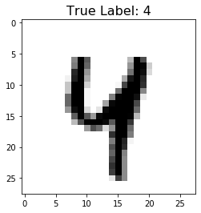
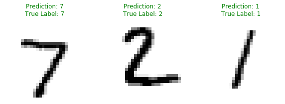

Train Your Own Model and Serve It With TensorFlow Serving
In this notebook, you will train a neural network to classify images of handwritten digits from the MNIST dataset. You will then save the trained model, and serve it using TensorFlow Serving.
Setup
1 | try: |
1 | import os |
Using TensorFlow Version: 2.2.0-dev20200217
Import the MNIST Dataset
The MNIST dataset contains 70,000 grayscale images of the digits 0 through 9. The images show individual digits at a low resolution (28 by 28 pixels).
Even though these are really images, we will load them as NumPy arrays and not as binary image objects.
1 | mnist = tf.keras.datasets.mnist |
Downloading data from https://storage.googleapis.com/tensorflow/tf-keras-datasets/mnist.npz
11493376/11490434 [==============================] - 1s 0us/step
1 | # EXERCISE: Scale the values of the arrays below to be between 0.0 and 1.0. |
1 | train_images.shape, test_images.shape |
((60000, 28, 28), (10000, 28, 28))
In the cell below use the .reshape method to resize the arrays to the following sizes:
1 | train_images.shape: (60000, 28, 28, 1) |
1 | # EXERCISE: Reshape the arrays below. |
1 | print('\ntrain_images.shape: {}, of {}'.format(train_images.shape, train_images.dtype)) |
train_images.shape: (60000, 28, 28, 1), of float64
test_images.shape: (10000, 28, 28, 1), of float64
Look at a Sample Image
1 | idx = 42 |

Build a Model
In the cell below build a tf.keras.Sequential model that can be used to classify the images of the MNIST dataset. Feel free to use the simplest possible CNN. Make sure your model has the correct input_shape and the correct number of output units.
1 | # EXERCISE: Create a model. |
Model: "sequential"
_________________________________________________________________
Layer (type) Output Shape Param #
=================================================================
Conv1 (Conv2D) (None, 13, 13, 8) 80
_________________________________________________________________
flatten (Flatten) (None, 1352) 0
_________________________________________________________________
Softmax (Dense) (None, 10) 13530
=================================================================
Total params: 13,610
Trainable params: 13,610
Non-trainable params: 0
_________________________________________________________________
Train the Model
In the cell below configure your model for training using the adam optimizer, sparse_categorical_crossentropy as the loss, and accuracy for your metrics. Then train the model for the given number of epochs, using the train_images array.
1 | # EXERCISE: Configure the model for training. |
Train on 60000 samples, validate on 10000 samples
Epoch 1/5
60000/60000 [==============================] - 8s 127us/sample - loss: 0.3098 - accuracy: 0.9120 - val_loss: 0.1723 - val_accuracy: 0.9489
Epoch 2/5
60000/60000 [==============================] - 7s 121us/sample - loss: 0.1511 - accuracy: 0.9569 - val_loss: 0.1145 - val_accuracy: 0.9667
Epoch 3/5
60000/60000 [==============================] - 7s 122us/sample - loss: 0.1103 - accuracy: 0.9680 - val_loss: 0.0939 - val_accuracy: 0.9720
Epoch 4/5
60000/60000 [==============================] - 7s 121us/sample - loss: 0.0901 - accuracy: 0.9737 - val_loss: 0.0895 - val_accuracy: 0.9739
Epoch 5/5
60000/60000 [==============================] - 7s 121us/sample - loss: 0.0780 - accuracy: 0.9763 - val_loss: 0.0787 - val_accuracy: 0.9758
Evaluate the Model
1 | # EXERCISE: Evaluate the model on the test images. |
10000/10000 [==============================] - 0s 39us/sample - loss: 0.0787 - accuracy: 0.9758
loss: 0.0787
accuracy: 0.976
Save the Model
1 | MODEL_DIR = "digits_model" |
Examine Your Saved Model
1 | !saved_model_cli show --dir {export_path} --all |
MetaGraphDef with tag-set: 'serve' contains the following SignatureDefs:
signature_def['__saved_model_init_op']:
The given SavedModel SignatureDef contains the following input(s):
The given SavedModel SignatureDef contains the following output(s):
outputs['__saved_model_init_op'] tensor_info:
dtype: DT_INVALID
shape: unknown_rank
name: NoOp
Method name is:
signature_def['serving_default']:
The given SavedModel SignatureDef contains the following input(s):
inputs['Conv1_input'] tensor_info:
dtype: DT_FLOAT
shape: (-1, 28, 28, 1)
name: serving_default_Conv1_input:0
The given SavedModel SignatureDef contains the following output(s):
outputs['Softmax'] tensor_info:
dtype: DT_FLOAT
shape: (-1, 10)
name: StatefulPartitionedCall:0
Method name is: tensorflow/serving/predict
WARNING:tensorflow:From /Users/ZRC/miniconda3/envs/tryit/lib/python3.6/site-packages/tensorflow/python/ops/resource_variable_ops.py:1809: calling BaseResourceVariable.__init__ (from tensorflow.python.ops.resource_variable_ops) with constraint is deprecated and will be removed in a future version.
Instructions for updating:
If using Keras pass *_constraint arguments to layers.
Defined Functions:
Function Name: '__call__'
Option #1
Callable with:
Argument #1
inputs: TensorSpec(shape=(None, 28, 28, 1), dtype=tf.float32, name='inputs')
Argument #2
DType: bool
Value: False
Argument #3
DType: NoneType
Value: None
Option #2
Callable with:
Argument #1
Conv1_input: TensorSpec(shape=(None, 28, 28, 1), dtype=tf.float32, name='Conv1_input')
Argument #2
DType: bool
Value: False
Argument #3
DType: NoneType
Value: None
Option #3
Callable with:
Argument #1
Conv1_input: TensorSpec(shape=(None, 28, 28, 1), dtype=tf.float32, name='Conv1_input')
Argument #2
DType: bool
Value: True
Argument #3
DType: NoneType
Value: None
Option #4
Callable with:
Argument #1
inputs: TensorSpec(shape=(None, 28, 28, 1), dtype=tf.float32, name='inputs')
Argument #2
DType: bool
Value: True
Argument #3
DType: NoneType
Value: None
Function Name: '_default_save_signature'
Option #1
Callable with:
Argument #1
Conv1_input: TensorSpec(shape=(None, 28, 28, 1), dtype=tf.float32, name='Conv1_input')
Function Name: 'call_and_return_all_conditional_losses'
Option #1
Callable with:
Argument #1
Conv1_input: TensorSpec(shape=(None, 28, 28, 1), dtype=tf.float32, name='Conv1_input')
Argument #2
DType: bool
Value: False
Argument #3
DType: NoneType
Value: None
Option #2
Callable with:
Argument #1
Conv1_input: TensorSpec(shape=(None, 28, 28, 1), dtype=tf.float32, name='Conv1_input')
Argument #2
DType: bool
Value: True
Argument #3
DType: NoneType
Value: None
Option #3
Callable with:
Argument #1
inputs: TensorSpec(shape=(None, 28, 28, 1), dtype=tf.float32, name='inputs')
Argument #2
DType: bool
Value: True
Argument #3
DType: NoneType
Value: None
Option #4
Callable with:
Argument #1
inputs: TensorSpec(shape=(None, 28, 28, 1), dtype=tf.float32, name='inputs')
Argument #2
DType: bool
Value: False
Argument #3
DType: NoneType
Value: None
Add TensorFlow Serving Distribution URI as a Package Source
1 | # This is the same as you would do from your command line, but without the [arch=amd64], and no sudo |
tee: /etc/apt/sources.list.d/tensorflow-serving.list: No such file or directory
deb http://storage.googleapis.com/tensorflow-serving-apt stable tensorflow-model-server tensorflow-model-server-universal
Unable to locate an executable at "/Library/Java/JavaVirtualMachines/jdk1.8.0_73.jdk/Contents/Home/bin/apt" (-1)
Install TensorFlow Serving
1 | !apt-get install tensorflow-model-server |
/bin/sh: apt-get: command not found
Run the TensorFlow Model Server
You will now launch the TensorFlow model server with a bash script. In the cell below use the following parameters when running the TensorFlow model server:
rest_api_port: Use port8501for your requests.
model_name: Usedigits_modelas your model name.
model_base_path: Use the environment variableMODEL_DIRdefined below as the base path to the saved model.
1 | os.environ["MODEL_DIR"] = MODEL_DIR |
1 | MODEL_DIR |
'digits_model'
- -p 8501:8501 : Publishing the container’s port 8501 (where TF Serving responds to REST API requests) to the host’s port 8501
- —mount type=bind,source=/tmp/resnet,target=/models/resnet : Mounting the host’s local directory (/tmp/resnet) on the container (/models/resnet) so TF Serving can read the model from inside the container.
- -e MODEL_NAME=digits_model : Telling TensorFlow Serving to load the model named “digits_model”
- -t tensorflow/serving : Running a Docker container based on the serving image “tensorflow/serving”
1 | %%bash |
docker: Error response from daemon: driver failed programming external connectivity on endpoint wonderful_ganguly (32049ac8fc320931031b817d6269004dcac5878b1e8c8addceb79fb1cd5dca24): Bind for 0.0.0.0:8501 failed: port is already allocated.
1 | # # EXERCISE: Fill in the missing code below. |
1 | !tail server.log |
docker: Error response from daemon: driver failed programming external connectivity on endpoint determined_antonelli (6a4d67f3751bc7f9fed7821f6df430cbf368992e00c710738cb6f1d9f1e647d2): Bind for 0.0.0.0:8501 failed: port is already allocated.
Create JSON Object with Test Images
In the cell below construct a JSON object and use the first three images of the testing set (test_images) as your data.
1 | # EXERCISE: Create JSON Object |
Make Inference Request
In the cell below, send a predict request as a POST to the server’s REST endpoint, and pass it your test data. You should ask the server to give you the latest version of your model.
1 | # EXERCISE: Fill in the code below |
1 | predictions |
[[1.68959902e-09,
3.5654768e-10,
4.89267848e-07,
6.09665512e-05,
5.58686e-10,
2.27727126e-09,
8.49646383e-15,
0.999936819,
1.21679037e-07,
1.63355e-06],
[1.37625943e-06,
6.47248962e-05,
0.99961108,
4.23558049e-06,
5.8764843e-10,
7.63888067e-07,
0.000306190021,
2.43645703e-15,
1.15736648e-05,
8.24755108e-12],
[2.70507389e-05,
0.996317267,
0.00121238839,
1.1719947e-05,
0.00065574795,
2.86702857e-06,
0.000181563752,
0.000955980679,
0.000630841067,
4.60029833e-06]]
Plot Predictions
1 | plt.figure(figsize=(10,15)) |
